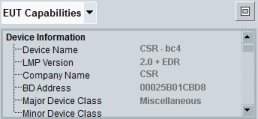
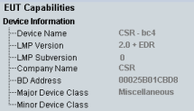
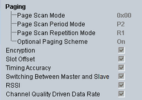
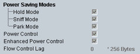
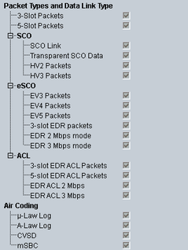

The "EUT Capabilities" pane displays device information requested from the EUT after a connection has been successfully established.
To maximize the EUT capabilities area and display all capability information, press the button to the right.

This section is not relevant for the burst type LE.
Gets basic information about the EUT collected during inquiry and connection setup.

Gets the connection features of the EUT as reported in an LMP_features_req/LMP_features_res informational request/response.

Gets the power control capabilities of the EUT as reported in an LMP_features_req/LMP_features_res informational request/response.

Gets the EUT capabilities related to packet type and data link type, as reported in an LMP_features_req/LMP_features_res informational request/response.
